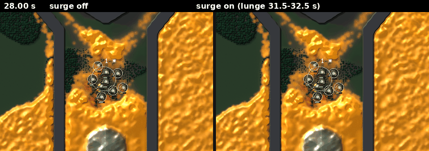
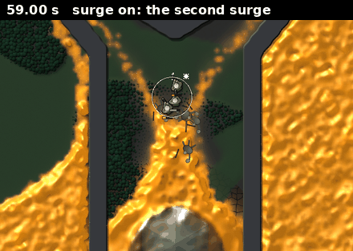

<title>Slime Surges</title>
<meta name="claude:viewport-fit-sides" content="cover">
<link rel="stylesheet" href="https://fonts.googleapis.com/css2?family=Bricolage+Grotesque:opsz,wght@12..96,600;12..96,750&family=Source+Sans+3:wght@400;600&family=JetBrains+Mono:wght@400&display=swap">
<style>
/* Layout: one reading column, clips full width of it, findings as numbered items because they are ranked */
:root{
  --bg:#f3f2ec; --panel:#e8e6dc; --fg:#1d211c; --muted:#5b6157;
  --slime:#c77a06; --slime-soft:#f2d49a; --crystal:#1590a8; --line:#cfccbf;
  --display:"Bricolage Grotesque", "Segoe UI", system-ui, sans-serif;
  --body:"Source Sans 3", "Segoe UI", system-ui, sans-serif;
  --mono:"JetBrains Mono", ui-monospace, Consolas, monospace;
}
@media (prefers-color-scheme: dark){:root:not([data-theme="light"]){
  --bg:#141812; --panel:#1d231b; --fg:#e7e9e1; --muted:#9aa294;
  --slime:#f1a12a; --slime-soft:#4a3410; --crystal:#5cc8dc; --line:#2f382c; color-scheme:dark}}
:root[data-theme="dark"]{
  --bg:#141812; --panel:#1d231b; --fg:#e7e9e1; --muted:#9aa294;
  --slime:#f1a12a; --slime-soft:#4a3410; --crystal:#5cc8dc; --line:#2f382c; color-scheme:dark}
body{background:var(--bg);color:var(--fg);font:17px/1.55 var(--body);
  padding-left:max(16px,env(safe-area-inset-left,0px));padding-right:max(16px,env(safe-area-inset-right,0px));padding-block:28px 64px}
main{max-width:780px;margin:0 auto;display:flex;flex-direction:column;gap:28px}
h1,h2,h3{font-family:var(--display);text-wrap:balance;line-height:1.15;margin:0}
h1{font-size:2.3rem;font-weight:750}
h2{font-size:1.45rem;font-weight:750;border-top:2px solid var(--slime);padding-top:14px}
h3{font-size:1.08rem;font-weight:600}
p{margin:0}
section{display:flex;flex-direction:column;gap:12px}
.lede{color:var(--muted);font-size:1.02rem}
.eyebrow{font:12px/1 var(--mono);letter-spacing:.08em;text-transform:uppercase;color:var(--slime)}
ul,ol{margin:0;padding-left:1.25em;display:flex;flex-direction:column;gap:8px}
li{min-width:0}
code{font:0.86em var(--mono);background:var(--panel);padding:1px 4px;border-radius:3px}
figure{margin:0;display:flex;flex-direction:column;gap:8px}
figure img{width:100%;border-radius:6px;border:1px solid var(--line);background:#000}
figcaption{font-size:.92rem;color:var(--muted)}
figcaption b{color:var(--fg)}
.counts{font:13px/1.5 var(--mono);color:var(--fg);background:var(--panel);padding:8px 10px;border-radius:6px;overflow-x:auto;white-space:pre}
.short{background:var(--slime-soft);border-radius:8px;padding:16px 18px}
.short ol{gap:10px}
.tbl{overflow-x:auto}
table{border-collapse:collapse;width:100%;font-size:.94rem}
th,td{text-align:left;padding:7px 8px;border-bottom:1px solid var(--line);vertical-align:top}
th{font-family:var(--display);font-weight:600}
.num{font-variant-numeric:tabular-nums}
.q{border-left:3px solid var(--crystal);padding-left:12px}
.tag{font:12px var(--mono);color:var(--crystal)}
footer{font-size:.85rem;color:var(--muted)}
</style>
<main>
<header style="display:flex;flex-direction:column;gap:10px">
  <span class="eyebrow">Larder World · the enemy · 2026-11-15</span>
  <h1>The slime surges</h1>
  <p class="lede">You said some slimes "just hang at their home crystal ... So their is no rush ... no need to defend". Now the body pushes back. Every 30 seconds the slime near your soldiers and buildings gathers, then lunges at them.</p>
</header>

<section>
  <h2>The rule</h2>
  <p>Every 30 s, the slime within reach of a soldier or building creeps toward the nearest one for 1.5 s, so the front swells toward it. That is your warning. Then it lunges for 1 s at twice its pace. Its reach is your gun's range plus 5 cells, the same as a cut-off piece's charge, so a squad close enough to shoot the slime can be surged, and a longer-range gun moves the reach too.</p>
  <p>It's on in shape C, so the sandbox and the run planets both play it. The start menu has a new Surge option for how often it comes (20 s, 30 s or 60 s), and 0 turns it off.</p>
</section>

<section>
  <h2>A squad at the edge</h2>
  <figure>
    
    <figcaption><b>Fork, seed 1, squad mode, the squad at the body's edge firing, 28 to 34 s.</b> Left: no surges. Right: surges, with the lunge at 31.5 to 32.5 s.</figcaption>
  </figure>
  <div class="tbl"><table class="num">
    <tr><th>Fork, seed 1</th><th>30 s</th><th>31.5 s</th><th>32 s</th><th>32.5 s</th><th>33 s</th><th>45 s</th></tr>
    <tr><td>Soldiers, off</td><td>9</td><td>9</td><td>9</td><td>9</td><td>9</td><td>4</td></tr>
    <tr><td>Soldiers, on</td><td>9</td><td>9</td><td>9</td><td>7</td><td>7</td><td>4</td></tr>
    <tr><td>Most slime on one soldier, off / on</td><td>6 / 7</td><td>5 / 9</td><td>2 / 13</td><td>2 / 16</td><td>9 / 6</td><td>4 / 0</td></tr>
  </table></div>
  <figure>
    
    <figcaption><b>The second surge, 59 to 63 s.</b> The last 3 soldiers fall by 62 s. Without surges this squad walked into the body and was wiped at 51 s, so the two runs end the same way by different roads.</figcaption>
  </figure>
  <p>This is one seed and one scripted hand, so it's not a balance reading. It shows that standing at the slime's edge is no longer safe.</p>
</section>

<section>
  <h2>Pumps</h2>
  <p>I put four pumps on crystals along the slime's arms. Even without surges, shape C wears all four down by 1:00, because it grows over those crystals anyway. With surges one pump falls about 10 s sooner, and the pumps feed 1,070 food against 1,252. So pumps going unattacked was mostly the run playing the wrong slime settings, which the run thread has fixed. Surges add pressure on top of that.</p>
</section>

<section>
  <h2>What it doesn't do yet</h2>
  <ul>
    <li>A squad more than 29 cells from the slime is out of reach, so a slime that stays home still won't come to you. Bigger slimes on run planets (the run thread's fix) and progression by depth are what bring it out.</li>
    <li>The only warning is the creep. If you can't see a surge coming, a brighter front while it gathers is the next step.</li>
    <li>Deeper planets should surge more often and harder. That's next, with the run thread.</li>
  </ul>
</section>

<footer>Made by the slime-enemy thread. Window frames from <code>larder-world look=DIR mode=squads hand=edge seed=1 centre=256.6,245,4 [surge=900]</code> on software Vulkan. CPU and GPU agree exactly in the squad twin test. Source in Reports/surge-2026-11-15/.</footer>
</main>
